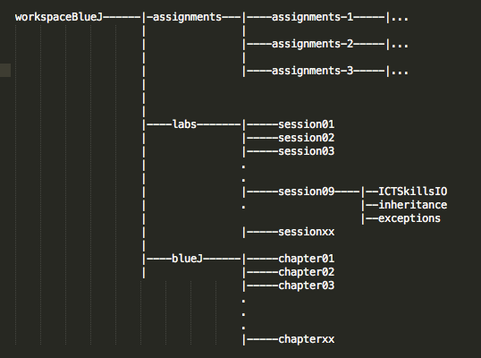

Readme
This assignment requires the application of some or all of the material presented during the semester.
Instructions
Interview
The result of your assignment will be based on:
- Grading the completed applications you submit,
- The outcome of an interview at which you will demo your applications, explain selected parts of your code and answer a randomly selected sample of questions taken from a list available to download here.
Setup and Guidelines
- Complete the development of the projects contained in the following files in accordance with the specification in steps 2 and 3:
When you have completed the assignment, export both projects to a folder (assignments-3-solutions), compress the folder and submit a single archive file named assignments-3-solutions.zip.
Recall the recommended directory structure. (The session numbers may be different). 
Download the archive files to a temporary directory.
Here are the steps to set up the first project (inheritance):
- Launch Eclipse
-
Create a new workspace named, for example, workspaceBlueJ/assignments/assignments-3 or select it if already in existence.

-
Import the inheritance project into the workspace.
- Ensure you click the button Select archive file in the Import window
- Do not click Select root directory.

- Do not click Select root directory.
- Ensure you click the button Select archive file in the Import window
-
The project should appear in the Package Explorer pane.
- Click the arrow to expand and view the files in the package shapes.

- Click the arrow to expand and view the files in the package shapes.
Repeat for the spacebook project.

You can quickly obtain a list of the tasks for the projects by selecting the Eclipse menu command: Window->Show View->Tasks.
- This will reveal a list of TODOs in the Tasks window.
- Double click on a task to open the corresponding source code file at this location.
You should make frequent use of the Eclipse debugger in developing and checking your code. Help will be provided where needed on this during the assignment studio sessions.
- Some screen shots follow that may help with the steps required to export the projects:

Q1 Inheritance
Task 1
Refactor the Rectangle class in the shapes package as follows:
- Extend the class from an abstract parent class Shapes
- Migrate as many methods and fields as possible to Shapes.
- Test by writing a main method in Rectangle in which you create a Rectangle object with the following attributes and as displayed in Figure 1:
- dimensions 100 long x 50 high
- color red.
- position (50, 100).

Task 2
Develop a class Pentagon.
-
Figure 2 depicts a pentagon and its circumscribing circle.

-
The origin of the pentagon is the centre of the circumscribing circle.
- This was demonstrated by invoking the method moveTo(int x, int y) with (x, y) == (0, 0) which resulted in the output shown in Figure 3.

Use Shapes as a superclass.
Here is skeleton code for Polygon:
import java.awt.Polygon;
/**
* @file Pentagon.java
* @brief This class describes a pentagon and has behaviour to display, resize and move objects
*
* @author jfitzgerald 2016-04-12
*
*/
public class Pentagon
{
private int radius; // The radius of circumscribing circle
public Pentagon()
{
super(...);
this.radius = 50;
}
public Pentagon(int radius, int xPosition, int yPosition, String color)
{
super(...);
...
}
public void changeSize(int scale)
{
...
...
...
}
void draw()
{
if(isVisible) {
//Ref: http://mathworld.wolfram.com/Pentagon.html
double dc1 = 0.25*(Math.sqrt(5) - 1);
double dc2 = 0.25*(Math.sqrt(5) + 1);
double ds1 = 0.25*(Math.sqrt(10 + 2*Math.sqrt(5)));
double ds2 = 0.25*(Math.sqrt(10 - 2*Math.sqrt(5)));
int c1 = -(int)(radius*dc1);//radius of circle that circumscribes pentagon
int c2 = -(int)(radius*dc2);
int s1 = (int)(radius*ds1);
int s2 = (int)(radius*ds2);
Canvas canvas = Canvas.getCanvas();
int[] xpoints = { xPosition,
xPosition + s1,
xPosition + s2,
xPosition - s2,
xPosition - s1
};
int[] ypoints = { yPosition - radius,
yPosition + c1,
yPosition - c2,
yPosition - c2,
yPosition + c1
};
canvas.draw(this, color, new Polygon(xpoints, ypoints, 5));
canvas.wait(10);
}
}
}
Task 3
Write a class TestPentagon to display a series of Pentagon objects as depicted in Figure 4.
Here is skeleton TestPentagon class code:
public class TestPentagon
{
public static void main(String[] args)
{
ArrayList<Shapes> shapes = new ArrayList<>();
shapes.add(new Pentagon(... , ...));
// ...
// ...
}
}
Task 4
Change the inheritance hierarchy to that shown in Figure 5:
- This involves refactoring Circle into Ellipse and Circle classes.
- The refactored Circle class is provided below.
- It only remains, therefore, to implement the Ellipse class.
- Ensure that duplication of data or methods does not occur between Circle and Ellipse.
- Derive Ellipse directly from Shapes.
- Derive Circle directly from Ellipse.
- Common data and methods should reside in Shapes as a first choice,
- Example, position coordindates, color.
- As much of remaining data and methods should then be migrated to Ellipse.
- Finally, data and behaviour unique to Circle, if any, should be located in Circle.

package ie.wit.ictskills.shapes;
/**
* A circle that can be manipulated and that draws itself on a canvas.
*
* @author Michael Kolling and David J. Barnes
* @version 2006.03.30
*
* @author jfitzgerald
* @version 2016-04-10
*
*/
public class Circle extends Ellipse implements Measurable
{
/**
* Create a new circle at default position with default color & diameter.
*/
public Circle()
{
// Invokes super class Ellipse with xDiameter & yDiameter == 100 units
// Default circle positioned at 0,0
super(120, 120, 0, 0, "red");
}
public Circle (int diameter, int xPosition, int yPosition, String color)
{
super(diameter, diameter, xPosition, yPosition, color);
}
@Override
public double perimeter() {
return Math.PI*xdiameter;
}
}
Task 5
The purpose of this task is to calculate the maximum perimeter of a list of various geometric shapes set out in item (i) below, applying the approach developed in the labs using Java interfaces.
Here is the interface code:
package ie.wit.ictskills.shapes;
public interface Measurable
{
double perimeter();
}
(i) Implement the interface in these classes:
- Circle
- Pentagon
- Rectangle
- Triangle
- Ellipse
(ii) Then, as required, implement the interface method perimeter in the classes.
The method perimeter() calculates and returns the length of the perimeter of an object created by instantiation of one of the above classes. For example, in the case of a circle the value
PI*diameter
is returned and in the case of a pentagon the perimeter is :
10*R*Sin(PI/5)
where R is the radius of the circumscribing circle.
- The file ellipsemeasure.jar contains a method that you should use to calculate the perimeter of an ellipse.
Here, as an example, is the class header for Rectangle:
public class Rectangle extends Shapes implements Measurable
(iii) The partially complete class MaximumPerimeter is provided.
Complete the main method so as to determine the maximum perimeter in the list of objects.
- A set of objects is instantiated in the main function. This code is commented out in the skeleton code to allow the project to compile without error. Remove the comments when appropriate.
Task 6
(iv) Skeleton code is provided in Util to discover the maximum perimeter from an ArrayList of Measurable types containing references to objects of the above classes. Complete the code.
Task 7
Refactor the TestShapes class as follows:
- Instantiate 4 Rectangle objects
- Choose arguments so that the Rectangle objects display in a cascade style
- Produce a display matching that in Figure 6.

Q2 Spacebook
You may use either your own or a library version of MergeSort for the various sorting activities performed throughout the application.
A helper project, messageCollectionSort, is available to download here.
- The project demonstrates how the Collections class may be used to sort a list of Messages
- based on natural ordering (using Message.compareTo)
- based on length of message text (using customized comparator)
- A study of the project should help you to understand when a comparator is necessary and when it is not.
- You may import this project into Eclipse.
- To run the project, select Main.java and execute run from the menu (Run | Run).
This Java application, spacebook, when developed by you, will share much of the functionality of the Home and LeaderBoard modules in the Play application developed in your WebDev labs and assignment.
Use the project provided (in skeleton form) in the download assignment-3-spacebook.zip.
- The file README.TXT in the spacebook project provides a quick-start guide.
The sender of the messages simulates the logged-in user.
For example, in all of the sample code provided, Homer is the logged-in user.
Two scenarios (stories) are fully developed in the skeleton code provided.
You are asked to develop a further four scenarios (tasks) as described below.
-
You may demonstrate these by running Main.java and selecting input numbers (integers):
-
0 which is equivalent to pressing the BY DATE button on the Play version of Spacebook: Home page for Homer Simpson view (this invokes Main home-index).

-
3 which is equivalent to pressing the MOST SOCIAL button in the Play version of Social Leaderboard view.

-
Task 1
Sort the logged-in user's inbox by reference to the names of the message senders.
- This requires you to complete the code along the execution path beginning with the invocation of Main home_byUser in the compilation unit (file) Main.java.
- When completed, running Main and inputting 1 should run the module and display the output as depicted in Figure 3.
Task 2
Sort the logged-in user's conversations with all its friends.
- A conversation comprises a series of messages to and fro between a sender and receiver.
- Example: the logged-in user, Homer, sends a message to Marge, Marge replies, and so on.
- This requires you to complete the code along the execution path beginning with the invocation of Main.home_byConversation in the compilation unit (file) Main.java.
- When completed, running Main and inputting 2 should run the module and display the output as depicted in Figure 4.

- When completed, running Main and inputting 2 should run the module and display the output as depicted in Figure 4.
Task 3
Sort the Social Leaderboard by reference to the most talkative users.
- Most talkative is defined as having the most number of messages in one's outbox.
- This requires you to complete the code along the execution path beginning with the invocation of Main leaderBoard_talkative in the compilation unit (file) Main.java.
- When completed, running Main and inputting 4 should run the module and display the output as depicted in Figure 5.

- When completed, running Main and inputting 4 should run the module and display the output as depicted in Figure 5.
Task 4
Sort the Social Leaderboard by reference to the least talkative users.
- Least talkative is defined as having the least number of messages in one's outbox.
- This requires you to complete the code along the execution path beginning with the invocation of Main leaderBoard_leastTalkative in the compilation unit (file) Main.java.
- When completed, running Main and inputting 5 should run the module and display the output as depicted in Figure 6.

- When completed, running Main and inputting 5 should run the module and display the output as depicted in Figure 6.